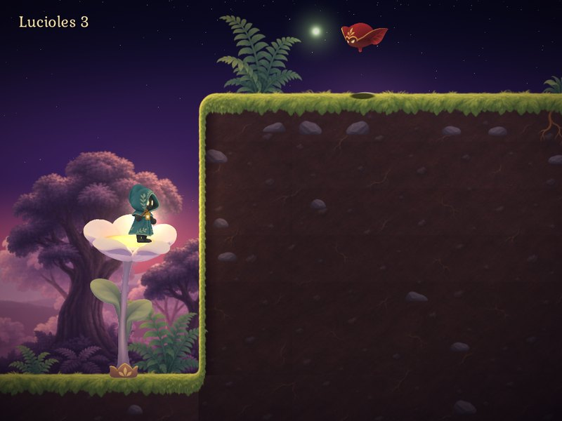
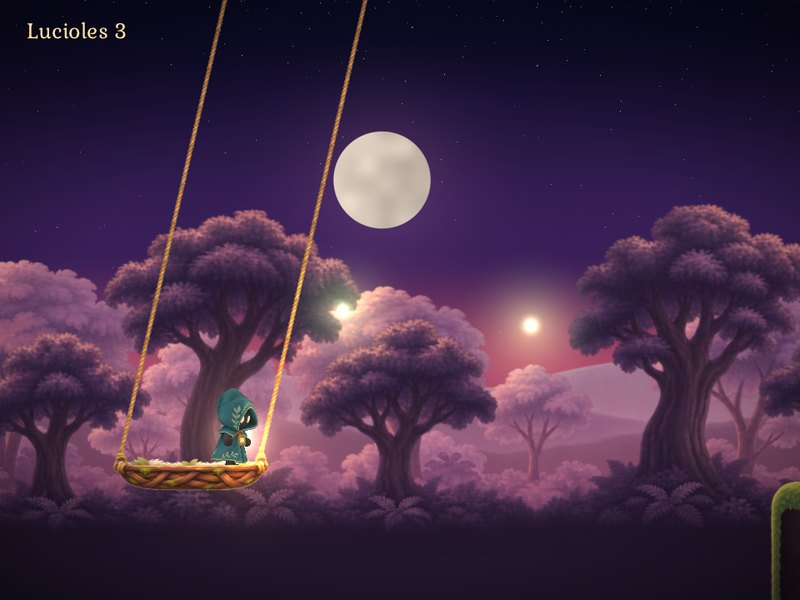
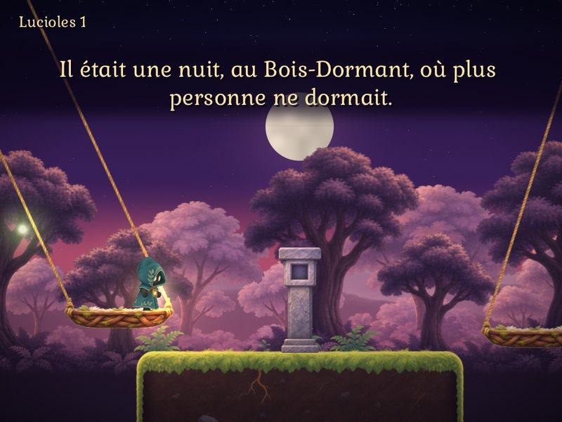

Luciole
Un jeu de plateforme : Lulu, une petite veilleuse à la lanterne, traverse une forêt qui ne dort plus et ramasse les lucioles pour la rendormir. Version d'essai pour Windows et Linux, au clavier ou à la manette.



C'est une version de travail : un seul niveau, écrit pour essayer des idées (les créatures qui s'endorment, la fleur, les berceaux suspendus, les phrases du conte). Elle n'est pas le jeu fini.
Installer et lancer sous Windows
- décompresser le zip (clic droit, « Extraire tout ») ;
- dans le dossier
luciole_sommeil, double-cliquer surluciole.exe(plein écran) ou surLuciole (fenetre).bat(une fenêtre de 1280 x 720) ; - au premier lancement, Windows peut afficher « Windows a protégé votre ordinateur » (le programme n'est pas signé) : « Informations complémentaires », puis « Exécuter quand même ».
Rien à installer. Il faut une carte graphique de 2012 ou après, avec un pilote à jour. Si le jeu se ferme
tout de suite, le fichier stderr.txt créé dans le dossier dit pourquoi.
La version Windows est toute récente : elle a été essayée sur deux PC sous Windows 10, tous deux à carte graphique NVIDIA. Sur une carte AMD ou Intel, elle n'a pas encore été essayée.
Installer et lancer sous Linux
tar xzf luciole_sommeil_linux.tar.gz cd luciole_sommeil ./jouer.sh # plein écran ./jouer.sh window # dans une fenêtre de 1280 x 720
Autres mots possibles après ./jouer.sh : notitle (le niveau tout de suite, sans
l'écran titre), mute (sans musique ni bruitages).
Ce qu'il faut sur un PC Linux
- un Linux 64 bits de 2022 ou après : la bibliothèque C du système doit être en version 2.34 au moins (Ubuntu 22.04, Debian 12, Fedora 35 et plus récents) ;
- la bibliothèque SDL 2 :
sudo apt install libsdl2-2.0-0(Debian, Ubuntu) ousudo dnf install SDL2(Fedora) ; - une carte graphique qui sait OpenGL ES 3 (celles des dix dernières années sous Linux).
Les touches
| Flèches gauche et droite | courir ; dans un berceau, pousser dans le sens où il va lui donne de l'élan |
| X ou C | sauter (plus haut en gardant la touche) ; sur une créature : elle s'endort |
| Flèche bas | s'accroupir, regarder en bas |
| Entrée | valider dans le menu |
| Échap | quitter |
Une manette branchée fonctionne aussi : croix ou stick pour courir, A ou B pour sauter, Select + Start pour quitter.
Ce qu'on peut essayer
- Les Grognons (les champignons) : sauter dessus les endort. Endormis, ce sont des tremplins : en gardant le saut, on monte plus haut qu'avec un saut.
- Les Samares (les graines ailées) : endormies, elles descendent, se plantent, et une fleur de nuit pousse. On peut monter dessus.
- Les berceaux suspendus : ils se balancent au-dessus du vide et emportent Lulu. Sauter quand le berceau va vite envoie beaucoup plus loin.